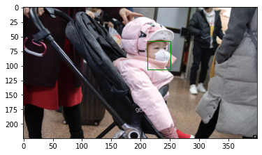
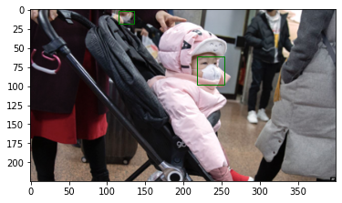

<!DOCTYPE html>

<html>
  <head>
    <meta charset="utf-8" />
    <meta name="viewport" content="width=device-width, initial-scale=1.0" />
    <title>4. 데이터 모델링 &#8212; PseudoLab Tutorial Book</title>
    
  <link rel="stylesheet" href="../../_static/css/index.73d71520a4ca3b99cfee5594769eaaae.css">

    
  <link rel="stylesheet"
    href="../../_static/vendor/fontawesome/5.13.0/css/all.min.css">
  <link rel="preload" as="font" type="font/woff2" crossorigin
    href="../../_static/vendor/fontawesome/5.13.0/webfonts/fa-solid-900.woff2">
  <link rel="preload" as="font" type="font/woff2" crossorigin
    href="../../_static/vendor/fontawesome/5.13.0/webfonts/fa-brands-400.woff2">

    
      
  <link rel="stylesheet"
    href="../../_static/vendor/open-sans_all/1.44.1/index.css">
  <link rel="stylesheet"
    href="../../_static/vendor/lato_latin-ext/1.44.1/index.css">

    
    <link rel="stylesheet" href="../../_static/pygments.css" type="text/css" />
    <link rel="stylesheet" href="../../_static/sphinx-book-theme.40e2e510f6b7d1648584402491bb10fe.css" type="text/css" />
    <link rel="stylesheet" type="text/css" href="../../_static/togglebutton.css" />
    <link rel="stylesheet" type="text/css" href="../../_static/copybutton.css" />
    <link rel="stylesheet" type="text/css" href="../../_static/mystnb.css" />
    <link rel="stylesheet" type="text/css" href="../../_static/sphinx-thebe.css" />
    <link rel="stylesheet" type="text/css" href="../../_static/panels-main.c949a650a448cc0ae9fd3441c0e17fb0.css" />
    <link rel="stylesheet" type="text/css" href="../../_static/panels-variables.06eb56fa6e07937060861dad626602ad.css" />
    
  <link rel="preload" as="script" href="../../_static/js/index.3da636dd464baa7582d2.js">

    <script id="documentation_options" data-url_root="../../" src="../../_static/documentation_options.js"></script>
    <script src="../../_static/jquery.js"></script>
    <script src="../../_static/underscore.js"></script>
    <script src="../../_static/doctools.js"></script>
    <script src="../../_static/language_data.js"></script>
    <script src="../../_static/togglebutton.js"></script>
    <script src="../../_static/clipboard.min.js"></script>
    <script src="../../_static/copybutton.js"></script>
    <script >var togglebuttonSelector = '.toggle, .admonition.dropdown, .tag_hide_input div.cell_input, .tag_hide-input div.cell_input, .tag_hide_output div.cell_output, .tag_hide-output div.cell_output, .tag_hide_cell.cell, .tag_hide-cell.cell';</script>
    <script src="../../_static/sphinx-book-theme.d31b09fe5c1d09cb49b26a786de4a05d.js"></script>
    <script async="async" src="https://unpkg.com/thebelab@latest/lib/index.js"></script>
    <script >
        const thebe_selector = ".thebe"
        const thebe_selector_input = "pre"
        const thebe_selector_output = ".output"
    </script>
    <script async="async" src="../../_static/sphinx-thebe.js"></script>
    <link rel="index" title="Index" href="../../genindex.html" />
    <link rel="search" title="Search" href="../../search.html" />
    <link rel="next" title="5. 성능 향상을 위한 방법" href="Ch5_%EC%84%B1%EB%8A%A5%20%ED%96%A5%EC%83%81%EC%9D%84%20%EC%9C%84%ED%95%9C%20%EB%B0%A9%EB%B2%95.html" />
    <link rel="prev" title="3. 데이터 전처리" href="Ch3_%EB%8D%B0%EC%9D%B4%ED%84%B0%20%EC%A0%84%EC%B2%98%EB%A6%AC.html" />

    <meta name="viewport" content="width=device-width, initial-scale=1" />
    <meta name="docsearch:language" content="en" />


  </head>
  <body data-spy="scroll" data-target="#bd-toc-nav" data-offset="80">
    

    <div class="container-xl">
      <div class="row">
          
<div class="col-12 col-md-3 bd-sidebar site-navigation show" id="site-navigation">
    
        <div class="navbar-brand-box">
<a class="navbar-brand text-wrap" href="../../index.html">
  
  
  
  
  <h1 class="site-logo" id="site-title">PseudoLab Tutorial Book</h1>
  
</a>
</div><form class="bd-search d-flex align-items-center" action="../../search.html" method="get">
  <i class="icon fas fa-search"></i>
  <input type="search" class="form-control" name="q" id="search-input" placeholder="Search this book..." aria-label="Search this book..." autocomplete="off" >
</form>
<nav class="bd-links" id="bd-docs-nav" aria-label="Main navigation">
    <ul class="current nav sidenav_l1">
 <li class="toctree-l1">
  <a class="reference internal" href="Ch1_Object%20Detection.html">
   1. 객체 탐지(Object Detection)
  </a>
 </li>
 <li class="toctree-l1">
  <a class="reference internal" href="Ch2_%EB%8D%B0%EC%9D%B4%ED%84%B0%20%ED%83%90%EC%83%89.html">
   2. 데이터 탐색
  </a>
 </li>
 <li class="toctree-l1">
  <a class="reference internal" href="Ch3_%EB%8D%B0%EC%9D%B4%ED%84%B0%20%EC%A0%84%EC%B2%98%EB%A6%AC.html">
   3. 데이터 전처리
  </a>
 </li>
 <li class="toctree-l1 current active">
  <a class="current reference internal" href="#">
   4. 데이터 모델링
  </a>
 </li>
 <li class="toctree-l1">
  <a class="reference internal" href="Ch5_%EC%84%B1%EB%8A%A5%20%ED%96%A5%EC%83%81%EC%9D%84%20%EC%9C%84%ED%95%9C%20%EB%B0%A9%EB%B2%95.html">
   5. 성능 향상을 위한 방법
  </a>
 </li>
</ul>

</nav> <!-- To handle the deprecated key -->

<div class="navbar_extra_footer">
  Powered by <a href="https://jupyterbook.org">Jupyter Book</a>
</div>

</div>


          


          
<main class="col py-md-3 pl-md-4 bd-content overflow-auto" role="main">
    
    <div class="row topbar fixed-top container-xl">
    <div class="col-12 col-md-3 bd-topbar-whitespace site-navigation show">
    </div>
    <div class="col pl-2 topbar-main">
        
        <button id="navbar-toggler" class="navbar-toggler ml-0" type="button" data-toggle="collapse"
            data-toggle="tooltip" data-placement="bottom" data-target=".site-navigation" aria-controls="navbar-menu"
            aria-expanded="true" aria-label="Toggle navigation" aria-controls="site-navigation"
            title="Toggle navigation" data-toggle="tooltip" data-placement="left">
            <i class="fas fa-bars"></i>
            <i class="fas fa-arrow-left"></i>
            <i class="fas fa-arrow-up"></i>
        </button>
        
        
<div class="dropdown-buttons-trigger">
    <button id="dropdown-buttons-trigger" class="btn btn-secondary topbarbtn" aria-label="Download this page"><i
            class="fas fa-download"></i></button>

    <div class="dropdown-buttons">
        <!-- ipynb file if we had a myst markdown file -->
        
        <!-- Download raw file -->
        <a class="dropdown-buttons" href="../../_sources/docs/object_detection/Ch4_데이터 모델링.md"><button type="button"
                class="btn btn-secondary topbarbtn" title="Download source file" data-toggle="tooltip"
                data-placement="left">.md</button></a>
        <!-- Download PDF via print -->
        <button type="button" id="download-print" class="btn btn-secondary topbarbtn" title="Print to PDF"
            onClick="window.print()" data-toggle="tooltip" data-placement="left">.pdf</button>
    </div>
</div>

        <!-- Source interaction buttons -->


        <!-- Full screen (wrap in <a> to have style consistency -->
        <a class="full-screen-button"><button type="button" class="btn btn-secondary topbarbtn" data-toggle="tooltip"
                data-placement="bottom" onclick="toggleFullScreen()" aria-label="Fullscreen mode"
                title="Fullscreen mode"><i
                    class="fas fa-expand"></i></button></a>

        <!-- Launch buttons -->

    </div>

    <!-- Table of contents -->
    <div class="d-none d-md-block col-md-2 bd-toc show">
        
        <div class="tocsection onthispage pt-5 pb-3">
            <i class="fas fa-list"></i> Contents
        </div>
        <nav id="bd-toc-nav">
            <ul class="nav section-nav flex-column">
 <li class="toc-h2 nav-item toc-entry">
  <a class="reference internal nav-link" href="#id2">
   4.1 데이터 다운로드
  </a>
 </li>
 <li class="toc-h2 nav-item toc-entry">
  <a class="reference internal nav-link" href="#id3">
   4.2 데이터 분리
  </a>
 </li>
 <li class="toc-h2 nav-item toc-entry">
  <a class="reference internal nav-link" href="#id4">
   4.3 데이터셋 클래스 정의
  </a>
 </li>
 <li class="toc-h2 nav-item toc-entry">
  <a class="reference internal nav-link" href="#id5">
   4.4 모델 불러오기
  </a>
 </li>
 <li class="toc-h2 nav-item toc-entry">
  <a class="reference internal nav-link" href="#id6">
   4.5 전이 학습
  </a>
 </li>
 <li class="toc-h2 nav-item toc-entry">
  <a class="reference internal nav-link" href="#id7">
   4.6 예측
  </a>
 </li>
</ul>

        </nav>
        
    </div>
</div>
    <div id="main-content" class="row">
        <div class="col-12 col-md-9 pl-md-3 pr-md-0">
        
              <div>
                
  <div class="section" id="id1">
<h1>4. 데이터 모델링<a class="headerlink" href="#id1" title="Permalink to this headline">¶</a></h1>
<p>이번 장에서는 torchvision에서 제공하는 one-stage 모델인 RetinaNet을 활용하여 의료용 마스크 검출 모델을 구축해보겠습니다. torchvision API를 활용하여 사전 훈련된 모델을 가지고 온 후 전이 학습을 통해 모델을 구축할 것입니다.</p>
<div class="highlight-python notranslate"><div class="highlight"><pre><span></span>!pip install mapcalc
</pre></div>
</div>
<div class="highlight-none notranslate"><div class="highlight"><pre><span></span>Collecting mapcalc
  Downloading https://files.pythonhosted.org/packages/11/c3/8c6e3c2e3b57d87a0fca11844e0b215c75f0cb6609a32baba9b440effc62/mapcalc-0.1.1.tar.gz
Requirement already satisfied: numpy in /usr/local/lib/python3.6/dist-packages (from mapcalc) (1.18.5)
Building wheels for collected packages: mapcalc
  Building wheel for mapcalc (setup.py) ... [?25l[?25hdone
  Created wheel for mapcalc: filename=mapcalc-0.1.1-cp36-none-any.whl size=4358 sha256=d4f8c69bbf1af587595d9ef283bc7be30699c4cdc5ec35fa2b02e0a9bd7bf233
  Stored in directory: /root/.cache/pip/wheels/d4/cf/c7/1d7e3b774fe610e31c0611176fbbbfaead125a3611800caee5
Successfully built mapcalc
Installing collected packages: mapcalc
Successfully installed mapcalc-0.1.1
</pre></div>
</div>
<div class="highlight-python notranslate"><div class="highlight"><pre><span></span><span class="kn">import</span> <span class="nn">mapcalc</span>
</pre></div>
</div>
<div class="highlight-python notranslate"><div class="highlight"><pre><span></span><span class="c1"># xmin, xmax, ymin, ymax</span>
<span class="n">true</span> <span class="o">=</span> <span class="p">{</span><span class="s1">&#39;boxes&#39;</span><span class="p">:[[</span><span class="mi">0</span><span class="p">,</span><span class="mi">100</span><span class="p">,</span><span class="mi">0</span><span class="p">,</span><span class="mi">100</span><span class="p">],</span>
                 <span class="p">[</span><span class="mi">200</span><span class="p">,</span><span class="mi">250</span><span class="p">,</span><span class="mi">0</span><span class="p">,</span><span class="mi">100</span><span class="p">]],</span>
        <span class="s1">&#39;labels&#39;</span><span class="p">:[</span><span class="mi">0</span><span class="p">,</span> <span class="mi">1</span><span class="p">]}</span>

<span class="n">pred</span> <span class="o">=</span> <span class="p">{</span><span class="s1">&#39;boxes&#39;</span><span class="p">:[[</span><span class="mi">0</span><span class="p">,</span><span class="mi">100</span><span class="p">,</span><span class="mi">0</span><span class="p">,</span><span class="mi">100</span><span class="p">],</span>
                 <span class="p">[</span><span class="mi">200</span><span class="p">,</span><span class="mi">250</span><span class="p">,</span><span class="mi">0</span><span class="p">,</span><span class="mi">100</span><span class="p">]],</span>
        <span class="s1">&#39;labels&#39;</span><span class="p">:[</span><span class="mi">0</span><span class="p">,</span> <span class="mi">1</span><span class="p">],</span>
        <span class="s1">&#39;scores&#39;</span><span class="p">:[</span><span class="mf">0.9</span><span class="p">,</span> <span class="mf">0.6</span><span class="p">]}</span>
</pre></div>
</div>
<div class="highlight-python notranslate"><div class="highlight"><pre><span></span><span class="n">mapcalc</span><span class="o">.</span><span class="n">calculate_map</span><span class="p">(</span><span class="n">true</span><span class="p">,</span> <span class="n">pred</span><span class="p">,</span> <span class="mf">0.5</span><span class="p">)</span>
</pre></div>
</div>
<div class="highlight-none notranslate"><div class="highlight"><pre><span></span>0.5
</pre></div>
</div>
<div class="highlight-python notranslate"><div class="highlight"><pre><span></span><span class="n">mapcalc</span><span class="o">.</span><span class="n">calculate_map_range</span><span class="p">(</span><span class="n">true</span><span class="p">,</span> <span class="n">pred</span><span class="p">,</span> <span class="mf">0.05</span><span class="p">,</span> <span class="mf">0.95</span><span class="p">,</span> <span class="mf">0.05</span><span class="p">)</span>
</pre></div>
</div>
<div class="highlight-none notranslate"><div class="highlight"><pre><span></span>0.5
</pre></div>
</div>
<div class="highlight-python notranslate"><div class="highlight"><pre><span></span><span class="kn">from</span> <span class="nn">mapcalc</span> <span class="kn">import</span> <span class="n">calculate_map</span><span class="p">,</span> <span class="n">calculate_map_range</span>

<span class="c1"># calculates the mAP for an IOU threshold of 0.5</span>
<span class="n">calculate_map</span><span class="p">(</span><span class="n">ground_truth</span><span class="p">,</span> <span class="n">result</span><span class="p">,</span> <span class="mf">0.5</span><span class="p">)</span>

<span class="c1"># calculates the mAP average for the IOU thresholds 0.05, 0.1, 0.15, ..., 0.90, 0.95.</span>
<span class="n">calculate_map_range</span><span class="p">(</span><span class="n">ground_truth</span><span class="p">,</span> <span class="n">result</span><span class="p">,</span> <span class="mf">0.05</span><span class="p">,</span> <span class="mf">0.95</span><span class="p">,</span> <span class="mf">0.05</span><span class="p">)</span>
</pre></div>
</div>
<div class="section" id="id2">
<h2>4.1 데이터 다운로드<a class="headerlink" href="#id2" title="Permalink to this headline">¶</a></h2>
<p>모델링 실습을 위해 2.1절에 나온 코드를 활용하여 데이터를 불러오겠습니다.</p>
<div class="highlight-python notranslate"><div class="highlight"><pre><span></span>!git clone https://github.com/Pseudo-Lab/Tutorial-Book-DataLoader
!python Tutorial-Book-DataLoader/PL_data_loader.py --data FaceMaskDetection
!unzip -q Face\ Mask\ Detection.zip
</pre></div>
</div>
<div class="highlight-none notranslate"><div class="highlight"><pre><span></span>Cloning into &#39;Tutorial-Book-DataLoader&#39;...
remote: Enumerating objects: 6, done.
remote: Counting objects: 100% (6/6), done.
remote: Compressing objects: 100% (5/5), done.
remote: Total 6 (delta 0), reused 3 (delta 0), pack-reused 0
Unpacking objects: 100% (6/6), done.
Face Mask Detection.zip is done!
</pre></div>
</div>
</div>
<div class="section" id="id3">
<h2>4.2 데이터 분리<a class="headerlink" href="#id3" title="Permalink to this headline">¶</a></h2>
<p>3.4절에서 확인한 데이터 분리 방법을 활용하여 데이터를 분리하겠습니다.</p>
<div class="highlight-python notranslate"><div class="highlight"><pre><span></span><span class="kn">import</span> <span class="nn">os</span>
<span class="nb">print</span><span class="p">(</span><span class="nb">len</span><span class="p">(</span><span class="n">os</span><span class="o">.</span><span class="n">listdir</span><span class="p">(</span><span class="s1">&#39;annotations&#39;</span><span class="p">)))</span>
<span class="nb">print</span><span class="p">(</span><span class="nb">len</span><span class="p">(</span><span class="n">os</span><span class="o">.</span><span class="n">listdir</span><span class="p">(</span><span class="s1">&#39;images&#39;</span><span class="p">)))</span>
</pre></div>
</div>
<div class="highlight-none notranslate"><div class="highlight"><pre><span></span>683
683
</pre></div>
</div>
<p>총 853개의 이미지가 존재하는 것을 볼 수 있습니다. 일반적으로 학습 데이터와 시험 데이터의 비율은 7:3 으로 가져갑니다. 이번 데이터는 전체 데이터셋 개수가 적으므로 8:2 비율을 가져가보도록 하겠습니다. 853개의 데이터 중 170개를 시험 데이터로 사용하기 위해 해당 데이터를 별도의 폴더로 옮겨 주도록 하겠습니다. 우선 리눅스 명령어 mkdir를 활용하여 시험 데이터를 담을 폴더를 생성합니다.</p>
<div class="highlight-python notranslate"><div class="highlight"><pre><span></span>!mkdir test_images
!mkdir test_annotations
</pre></div>
</div>
<p>위 코드를 실행 하면 그림 4.2와 같이 test_images 폴더와 test_annotations 폴더가 생성된 것을 확인할 수 있습니다. 이제 images 폴더와 annotations 폴더에 있는 파일 각각 170개씩을 새로 생성한 폴더로 옮기겠습니다. random 모듈에 있는 sample 함수를 활용해 무작위로 숫자를 추출한 후 인덱스 값으로 활용하겠습니다.</p>
<div class="highlight-python notranslate"><div class="highlight"><pre><span></span><span class="kn">import</span> <span class="nn">random</span>
<span class="n">random</span><span class="o">.</span><span class="n">seed</span><span class="p">(</span><span class="mi">1234</span><span class="p">)</span>
<span class="n">idx</span> <span class="o">=</span> <span class="n">random</span><span class="o">.</span><span class="n">sample</span><span class="p">(</span><span class="nb">range</span><span class="p">(</span><span class="mi">853</span><span class="p">),</span> <span class="mi">170</span><span class="p">)</span>
<span class="nb">print</span><span class="p">(</span><span class="nb">len</span><span class="p">(</span><span class="n">idx</span><span class="p">))</span>
<span class="nb">print</span><span class="p">(</span><span class="n">idx</span><span class="p">[:</span><span class="mi">10</span><span class="p">])</span>
</pre></div>
</div>
<div class="highlight-none notranslate"><div class="highlight"><pre><span></span>170
[796, 451, 119, 7, 92, 826, 596, 35, 687, 709]
</pre></div>
</div>
<div class="highlight-python notranslate"><div class="highlight"><pre><span></span><span class="kn">import</span> <span class="nn">numpy</span> <span class="k">as</span> <span class="nn">np</span>
<span class="kn">import</span> <span class="nn">shutil</span>

<span class="k">for</span> <span class="n">img</span> <span class="ow">in</span> <span class="n">np</span><span class="o">.</span><span class="n">array</span><span class="p">(</span><span class="nb">sorted</span><span class="p">(</span><span class="n">os</span><span class="o">.</span><span class="n">listdir</span><span class="p">(</span><span class="s1">&#39;images&#39;</span><span class="p">)))[</span><span class="n">idx</span><span class="p">]:</span>
    <span class="n">shutil</span><span class="o">.</span><span class="n">move</span><span class="p">(</span><span class="s1">&#39;images/&#39;</span><span class="o">+</span><span class="n">img</span><span class="p">,</span> <span class="s1">&#39;test_images/&#39;</span><span class="o">+</span><span class="n">img</span><span class="p">)</span>

<span class="k">for</span> <span class="n">annot</span> <span class="ow">in</span> <span class="n">np</span><span class="o">.</span><span class="n">array</span><span class="p">(</span><span class="nb">sorted</span><span class="p">(</span><span class="n">os</span><span class="o">.</span><span class="n">listdir</span><span class="p">(</span><span class="s1">&#39;annotations&#39;</span><span class="p">)))[</span><span class="n">idx</span><span class="p">]:</span>
    <span class="n">shutil</span><span class="o">.</span><span class="n">move</span><span class="p">(</span><span class="s1">&#39;annotations/&#39;</span><span class="o">+</span><span class="n">annot</span><span class="p">,</span> <span class="s1">&#39;test_annotations/&#39;</span><span class="o">+</span><span class="n">annot</span><span class="p">)</span>


</pre></div>
</div>
<p>위의 코드 처럼 shutil 패키지를 활용해 170개의 이미지와 170개의 좌표 파일들을 각각 test_images폴더와 test_annotations 폴더로 옮길 수 있습니다. 각 폴더별 파일 개수를 확인하면 아래와 같이 나올 것입니다.</p>
<div class="highlight-python notranslate"><div class="highlight"><pre><span></span><span class="nb">print</span><span class="p">(</span><span class="nb">len</span><span class="p">(</span><span class="n">os</span><span class="o">.</span><span class="n">listdir</span><span class="p">(</span><span class="s1">&#39;annotations&#39;</span><span class="p">)))</span>
<span class="nb">print</span><span class="p">(</span><span class="nb">len</span><span class="p">(</span><span class="n">os</span><span class="o">.</span><span class="n">listdir</span><span class="p">(</span><span class="s1">&#39;images&#39;</span><span class="p">)))</span>
<span class="nb">print</span><span class="p">(</span><span class="nb">len</span><span class="p">(</span><span class="n">os</span><span class="o">.</span><span class="n">listdir</span><span class="p">(</span><span class="s1">&#39;test_annotations&#39;</span><span class="p">)))</span>
<span class="nb">print</span><span class="p">(</span><span class="nb">len</span><span class="p">(</span><span class="n">os</span><span class="o">.</span><span class="n">listdir</span><span class="p">(</span><span class="s1">&#39;test_images&#39;</span><span class="p">)))</span>
</pre></div>
</div>
<div class="highlight-none notranslate"><div class="highlight"><pre><span></span>683
683
170
170
</pre></div>
</div>
</div>
<div class="section" id="id4">
<h2>4.3 데이터셋 클래스 정의<a class="headerlink" href="#id4" title="Permalink to this headline">¶</a></h2>
<p>파이토치 모델을 학습시키기 위해선 데이터셋 클래스를 정의해야 합니다. torchvision에서 제공하는 객체 탐지 모델을 학습시키기 위한 데이터셋 클래스의 <code class="docutils literal notranslate"><span class="pre">__getitem__</span></code> 메서드는 이미지 파일과 바운딩 박스 좌표를 반환해야 합니다. 데이터셋 클래스를 아래 코드를 통해 정의 하겠습니다. (부가 설명 필요, getitems 에 대한 설명 더, pytorch공식문서 참고)</p>
<div class="highlight-python notranslate"><div class="highlight"><pre><span></span>!git clone https://github.com/Paperspace/DataAugmentationForObjectDetection
import os
os.chdir(&#39;DataAugmentationForObjectDetection&#39;)
from data_aug.data_aug import *
from data_aug.bbox_util import *
import numpy as np 
import cv2 
import matplotlib.pyplot as plt 
import pickle as pkl
os.chdir(&#39;../&#39;)
</pre></div>
</div>
<div class="highlight-python notranslate"><div class="highlight"><pre><span></span><span class="c1"># import numpy as np </span>
<span class="c1"># import pandas as pd </span>
<span class="c1"># from bs4 import BeautifulSoup</span>
<span class="c1"># import torchvision</span>
<span class="c1"># from torchvision import transforms, datasets, models</span>
<span class="c1"># import torch</span>
<span class="c1"># from PIL import Image</span>
<span class="c1"># import matplotlib.patches as patches</span>
<span class="c1"># import matplotlib.pyplot as plt</span>
<span class="c1"># import os</span>


<span class="c1"># def generate_box(obj):</span>
    
<span class="c1">#     xmin = int(obj.find(&#39;xmin&#39;).text)</span>
<span class="c1">#     ymin = int(obj.find(&#39;ymin&#39;).text)</span>
<span class="c1">#     xmax = int(obj.find(&#39;xmax&#39;).text)</span>
<span class="c1">#     ymax = int(obj.find(&#39;ymax&#39;).text)</span>
    
<span class="c1">#     return [xmin, ymin, xmax, ymax]</span>

<span class="c1"># def generate_label(obj):</span>
<span class="c1">#     if obj.find(&#39;name&#39;).text == &quot;with_mask&quot;:</span>
<span class="c1">#         return 1</span>
<span class="c1">#     elif obj.find(&#39;name&#39;).text == &quot;mask_weared_incorrect&quot;:</span>
<span class="c1">#         return 2</span>
<span class="c1">#     return 0</span>

<span class="c1"># def generate_target(image_id, file): </span>
<span class="c1">#     with open(file) as f:</span>
<span class="c1">#         data = f.read()</span>
<span class="c1">#         soup = BeautifulSoup(data, &#39;html.parser&#39;)</span>
<span class="c1">#         objects = soup.find_all(&#39;object&#39;)</span>

<span class="c1">#         num_objs = len(objects)</span>

       
<span class="c1">#         boxes = []</span>
<span class="c1">#         labels = []</span>
<span class="c1">#         for i in objects:</span>
<span class="c1">#             boxes.append(generate_box(i))</span>
<span class="c1">#             labels.append(generate_label(i))</span>
<span class="c1">#         boxes = torch.as_tensor(boxes, dtype=torch.float32)</span>
<span class="c1">#         labels = torch.as_tensor(labels, dtype=torch.int64)</span>
<span class="c1">#         # Tensorise img_id</span>
<span class="c1">#         img_id = torch.tensor([image_id])</span>
<span class="c1">#         # Annotation is in dictionary format</span>
<span class="c1">#         target = {}</span>
<span class="c1">#         target[&quot;boxes&quot;] = boxes</span>
<span class="c1">#         target[&quot;labels&quot;] = labels</span>
<span class="c1">#         target[&quot;image_id&quot;] = img_id</span>
        
<span class="c1">#         return target</span>


<span class="c1"># class MaskDataset(object):</span>
<span class="c1">#     def __init__(self, transforms, path):</span>
<span class="c1">#         &#39;&#39;&#39;</span>
<span class="c1">#         path: path to train folder or test folder</span>
<span class="c1">#         &#39;&#39;&#39;</span>
<span class="c1">#         # transform module과 img path 경로를 정의</span>
<span class="c1">#         self.transforms = transforms</span>
<span class="c1">#         # load all image files, sorting them to</span>
<span class="c1">#         # ensure that they are aligned</span>
<span class="c1">#         self.path = path</span>
<span class="c1">#         self.imgs = list(sorted(os.listdir(self.path)))</span>


<span class="c1">#     def __getitem__(self, idx): #special method</span>
<span class="c1">#         # load images ad masks</span>
<span class="c1">#         file_image = self.imgs[idx]</span>
<span class="c1">#         file_label = self.imgs[idx][:-3] + &#39;xml&#39;</span>
<span class="c1">#         img_path = os.path.join(self.path, file_image)</span>
        
<span class="c1">#         if &#39;test&#39; in self.path:</span>
<span class="c1">#             label_path = os.path.join(&quot;test_annotations/&quot;, file_label)</span>
<span class="c1">#         else:</span>
<span class="c1">#             label_path = os.path.join(&quot;annotations/&quot;, file_label)</span>

<span class="c1">#         img = Image.open(img_path).convert(&quot;RGB&quot;)</span>
<span class="c1">#         #Generate Label</span>
<span class="c1">#         target = generate_target(idx, label_path)</span>
        
<span class="c1">#         if self.transforms is not None:</span>
<span class="c1">#             img = self.transforms(img)</span>

<span class="c1">#         return img, target</span>

<span class="c1">#     def __len__(self): # len() 적용가능케 함, special method</span>
<span class="c1">#         return len(self.imgs)</span>
<span class="kn">import</span> <span class="nn">os</span>
<span class="kn">import</span> <span class="nn">glob</span>
<span class="kn">import</span> <span class="nn">matplotlib.pyplot</span> <span class="k">as</span> <span class="nn">plt</span>
<span class="kn">import</span> <span class="nn">matplotlib.image</span> <span class="k">as</span> <span class="nn">mpimg</span>
<span class="kn">import</span> <span class="nn">matplotlib.patches</span> <span class="k">as</span> <span class="nn">patches</span>
<span class="kn">from</span> <span class="nn">bs4</span> <span class="kn">import</span> <span class="n">BeautifulSoup</span>
<span class="kn">from</span> <span class="nn">PIL</span> <span class="kn">import</span> <span class="n">Image</span>
<span class="kn">import</span> <span class="nn">cv2</span>
<span class="kn">import</span> <span class="nn">numpy</span> <span class="k">as</span> <span class="nn">np</span>
<span class="kn">import</span> <span class="nn">time</span>
<span class="kn">import</span> <span class="nn">torch</span>
<span class="kn">import</span> <span class="nn">torchvision</span>
<span class="kn">from</span> <span class="nn">torch.utils.data</span> <span class="kn">import</span> <span class="n">Dataset</span>
<span class="kn">from</span> <span class="nn">torchvision</span> <span class="kn">import</span> <span class="n">transforms</span>
<span class="kn">from</span> <span class="nn">matplotlib</span> <span class="kn">import</span> <span class="n">pyplot</span> <span class="k">as</span> <span class="n">plt</span>
<span class="kn">import</span> <span class="nn">os</span>

<span class="k">def</span> <span class="nf">generate_box</span><span class="p">(</span><span class="n">obj</span><span class="p">):</span>
    
    <span class="n">xmin</span> <span class="o">=</span> <span class="nb">float</span><span class="p">(</span><span class="n">obj</span><span class="o">.</span><span class="n">find</span><span class="p">(</span><span class="s1">&#39;xmin&#39;</span><span class="p">)</span><span class="o">.</span><span class="n">text</span><span class="p">)</span>
    <span class="n">ymin</span> <span class="o">=</span> <span class="nb">float</span><span class="p">(</span><span class="n">obj</span><span class="o">.</span><span class="n">find</span><span class="p">(</span><span class="s1">&#39;ymin&#39;</span><span class="p">)</span><span class="o">.</span><span class="n">text</span><span class="p">)</span>
    <span class="n">xmax</span> <span class="o">=</span> <span class="nb">float</span><span class="p">(</span><span class="n">obj</span><span class="o">.</span><span class="n">find</span><span class="p">(</span><span class="s1">&#39;xmax&#39;</span><span class="p">)</span><span class="o">.</span><span class="n">text</span><span class="p">)</span>
    <span class="n">ymax</span> <span class="o">=</span> <span class="nb">float</span><span class="p">(</span><span class="n">obj</span><span class="o">.</span><span class="n">find</span><span class="p">(</span><span class="s1">&#39;ymax&#39;</span><span class="p">)</span><span class="o">.</span><span class="n">text</span><span class="p">)</span>
    
    <span class="k">return</span> <span class="p">[</span><span class="n">xmin</span><span class="p">,</span> <span class="n">ymin</span><span class="p">,</span> <span class="n">xmax</span><span class="p">,</span> <span class="n">ymax</span><span class="p">]</span>

<span class="k">def</span> <span class="nf">generate_label</span><span class="p">(</span><span class="n">obj</span><span class="p">):</span>
    <span class="k">if</span> <span class="n">obj</span><span class="o">.</span><span class="n">find</span><span class="p">(</span><span class="s1">&#39;name&#39;</span><span class="p">)</span><span class="o">.</span><span class="n">text</span> <span class="o">==</span> <span class="s2">&quot;with_mask&quot;</span><span class="p">:</span>
        <span class="k">return</span> <span class="mi">1</span>
    <span class="k">elif</span> <span class="n">obj</span><span class="o">.</span><span class="n">find</span><span class="p">(</span><span class="s1">&#39;name&#39;</span><span class="p">)</span><span class="o">.</span><span class="n">text</span> <span class="o">==</span> <span class="s2">&quot;mask_weared_incorrect&quot;</span><span class="p">:</span>
        <span class="k">return</span> <span class="mi">2</span>
    <span class="k">return</span> <span class="mi">0</span>

<span class="k">def</span> <span class="nf">generate_target</span><span class="p">(</span><span class="n">file</span><span class="p">):</span> 
    <span class="k">with</span> <span class="nb">open</span><span class="p">(</span><span class="n">file</span><span class="p">)</span> <span class="k">as</span> <span class="n">f</span><span class="p">:</span>
        <span class="n">data</span> <span class="o">=</span> <span class="n">f</span><span class="o">.</span><span class="n">read</span><span class="p">()</span>
        <span class="n">soup</span> <span class="o">=</span> <span class="n">BeautifulSoup</span><span class="p">(</span><span class="n">data</span><span class="p">,</span> <span class="s2">&quot;html.parser&quot;</span><span class="p">)</span>
        <span class="n">objects</span> <span class="o">=</span> <span class="n">soup</span><span class="o">.</span><span class="n">find_all</span><span class="p">(</span><span class="s2">&quot;object&quot;</span><span class="p">)</span>

        <span class="n">num_objs</span> <span class="o">=</span> <span class="nb">len</span><span class="p">(</span><span class="n">objects</span><span class="p">)</span>

        <span class="n">boxes</span> <span class="o">=</span> <span class="p">[]</span>
        <span class="n">labels</span> <span class="o">=</span> <span class="p">[]</span>
        <span class="k">for</span> <span class="n">i</span> <span class="ow">in</span> <span class="n">objects</span><span class="p">:</span>
            <span class="n">boxes</span><span class="o">.</span><span class="n">append</span><span class="p">(</span><span class="n">generate_box</span><span class="p">(</span><span class="n">i</span><span class="p">))</span>
            <span class="n">labels</span><span class="o">.</span><span class="n">append</span><span class="p">(</span><span class="n">generate_label</span><span class="p">(</span><span class="n">i</span><span class="p">))</span>

        <span class="n">boxes</span> <span class="o">=</span> <span class="n">torch</span><span class="o">.</span><span class="n">as_tensor</span><span class="p">(</span><span class="n">boxes</span><span class="p">,</span> <span class="n">dtype</span><span class="o">=</span><span class="n">torch</span><span class="o">.</span><span class="n">float32</span><span class="p">)</span>
        <span class="n">labels</span> <span class="o">=</span> <span class="n">torch</span><span class="o">.</span><span class="n">as_tensor</span><span class="p">(</span><span class="n">labels</span><span class="p">,</span> <span class="n">dtype</span><span class="o">=</span><span class="n">torch</span><span class="o">.</span><span class="n">int64</span><span class="p">)</span>
        
        <span class="n">target</span> <span class="o">=</span> <span class="p">{}</span>
        <span class="n">target</span><span class="p">[</span><span class="s2">&quot;boxes&quot;</span><span class="p">]</span> <span class="o">=</span> <span class="n">boxes</span>
        <span class="n">target</span><span class="p">[</span><span class="s2">&quot;labels&quot;</span><span class="p">]</span> <span class="o">=</span> <span class="n">labels</span>
        
        <span class="k">return</span> <span class="n">target</span>

<span class="k">def</span> <span class="nf">plot_image_from_output</span><span class="p">(</span><span class="n">img_path</span><span class="p">,</span> <span class="n">annotation</span><span class="p">):</span>
    
    <span class="n">img</span> <span class="o">=</span> <span class="n">img_path</span><span class="o">.</span><span class="n">cpu</span><span class="p">()</span><span class="o">.</span><span class="n">permute</span><span class="p">(</span><span class="mi">1</span><span class="p">,</span><span class="mi">2</span><span class="p">,</span><span class="mi">0</span><span class="p">)</span>
    
    <span class="n">fig</span><span class="p">,</span><span class="n">ax</span> <span class="o">=</span> <span class="n">plt</span><span class="o">.</span><span class="n">subplots</span><span class="p">(</span><span class="mi">1</span><span class="p">)</span>
    <span class="n">ax</span><span class="o">.</span><span class="n">imshow</span><span class="p">(</span><span class="n">img</span><span class="p">)</span>

    
    <span class="k">for</span> <span class="n">idx</span> <span class="ow">in</span> <span class="nb">range</span><span class="p">(</span><span class="nb">len</span><span class="p">(</span><span class="n">annotation</span><span class="p">[</span><span class="s2">&quot;boxes&quot;</span><span class="p">])):</span>
        <span class="n">xmin</span><span class="p">,</span> <span class="n">ymin</span><span class="p">,</span> <span class="n">xmax</span><span class="p">,</span> <span class="n">ymax</span> <span class="o">=</span> <span class="n">annotation</span><span class="p">[</span><span class="s2">&quot;boxes&quot;</span><span class="p">][</span><span class="n">idx</span><span class="p">]</span>

        <span class="k">if</span> <span class="n">annotation</span><span class="p">[</span><span class="s1">&#39;labels&#39;</span><span class="p">][</span><span class="n">idx</span><span class="p">]</span> <span class="o">==</span> <span class="mi">0</span> <span class="p">:</span>
            <span class="n">rect</span> <span class="o">=</span> <span class="n">patches</span><span class="o">.</span><span class="n">Rectangle</span><span class="p">((</span><span class="n">xmin</span><span class="p">,</span><span class="n">ymin</span><span class="p">),(</span><span class="n">xmax</span><span class="o">-</span><span class="n">xmin</span><span class="p">),(</span><span class="n">ymax</span><span class="o">-</span><span class="n">ymin</span><span class="p">),</span><span class="n">linewidth</span><span class="o">=</span><span class="mi">1</span><span class="p">,</span><span class="n">edgecolor</span><span class="o">=</span><span class="s1">&#39;r&#39;</span><span class="p">,</span><span class="n">facecolor</span><span class="o">=</span><span class="s1">&#39;none&#39;</span><span class="p">)</span>
        
        <span class="k">elif</span> <span class="n">annotation</span><span class="p">[</span><span class="s1">&#39;labels&#39;</span><span class="p">][</span><span class="n">idx</span><span class="p">]</span> <span class="o">==</span> <span class="mi">1</span> <span class="p">:</span>
            
            <span class="n">rect</span> <span class="o">=</span> <span class="n">patches</span><span class="o">.</span><span class="n">Rectangle</span><span class="p">((</span><span class="n">xmin</span><span class="p">,</span><span class="n">ymin</span><span class="p">),(</span><span class="n">xmax</span><span class="o">-</span><span class="n">xmin</span><span class="p">),(</span><span class="n">ymax</span><span class="o">-</span><span class="n">ymin</span><span class="p">),</span><span class="n">linewidth</span><span class="o">=</span><span class="mi">1</span><span class="p">,</span><span class="n">edgecolor</span><span class="o">=</span><span class="s1">&#39;g&#39;</span><span class="p">,</span><span class="n">facecolor</span><span class="o">=</span><span class="s1">&#39;none&#39;</span><span class="p">)</span>
            
        <span class="k">else</span> <span class="p">:</span>
        
            <span class="n">rect</span> <span class="o">=</span> <span class="n">patches</span><span class="o">.</span><span class="n">Rectangle</span><span class="p">((</span><span class="n">xmin</span><span class="p">,</span><span class="n">ymin</span><span class="p">),(</span><span class="n">xmax</span><span class="o">-</span><span class="n">xmin</span><span class="p">),(</span><span class="n">ymax</span><span class="o">-</span><span class="n">ymin</span><span class="p">),</span><span class="n">linewidth</span><span class="o">=</span><span class="mi">1</span><span class="p">,</span><span class="n">edgecolor</span><span class="o">=</span><span class="s1">&#39;b&#39;</span><span class="p">,</span><span class="n">facecolor</span><span class="o">=</span><span class="s1">&#39;none&#39;</span><span class="p">)</span>

        <span class="c1"># Add the patch to the Axes</span>
        <span class="n">ax</span><span class="o">.</span><span class="n">add_patch</span><span class="p">(</span><span class="n">rect</span><span class="p">)</span>

    <span class="n">plt</span><span class="o">.</span><span class="n">show</span><span class="p">()</span>

<span class="k">class</span> <span class="nc">MaskDataset</span><span class="p">(</span><span class="n">Dataset</span><span class="p">):</span>
    <span class="k">def</span> <span class="fm">__init__</span><span class="p">(</span><span class="bp">self</span><span class="p">,</span> <span class="n">path</span><span class="p">,</span> <span class="n">transform</span><span class="o">=</span><span class="kc">None</span><span class="p">):</span>
        <span class="bp">self</span><span class="o">.</span><span class="n">path</span> <span class="o">=</span> <span class="n">path</span>
        <span class="bp">self</span><span class="o">.</span><span class="n">imgs</span> <span class="o">=</span> <span class="nb">list</span><span class="p">(</span><span class="nb">sorted</span><span class="p">(</span><span class="n">os</span><span class="o">.</span><span class="n">listdir</span><span class="p">(</span><span class="bp">self</span><span class="o">.</span><span class="n">path</span><span class="p">)))</span>
        <span class="bp">self</span><span class="o">.</span><span class="n">transform</span> <span class="o">=</span> <span class="n">transform</span>
        
    <span class="k">def</span> <span class="fm">__len__</span><span class="p">(</span><span class="bp">self</span><span class="p">):</span>
        <span class="k">return</span> <span class="nb">len</span><span class="p">(</span><span class="bp">self</span><span class="o">.</span><span class="n">imgs</span><span class="p">)</span>

    <span class="k">def</span> <span class="fm">__getitem__</span><span class="p">(</span><span class="bp">self</span><span class="p">,</span> <span class="n">idx</span><span class="p">):</span>
        <span class="n">file_image</span> <span class="o">=</span> <span class="bp">self</span><span class="o">.</span><span class="n">imgs</span><span class="p">[</span><span class="n">idx</span><span class="p">]</span>
        <span class="n">file_label</span> <span class="o">=</span> <span class="bp">self</span><span class="o">.</span><span class="n">imgs</span><span class="p">[</span><span class="n">idx</span><span class="p">][:</span><span class="o">-</span><span class="mi">3</span><span class="p">]</span> <span class="o">+</span> <span class="s1">&#39;xml&#39;</span>
        <span class="n">img_path</span> <span class="o">=</span> <span class="n">os</span><span class="o">.</span><span class="n">path</span><span class="o">.</span><span class="n">join</span><span class="p">(</span><span class="bp">self</span><span class="o">.</span><span class="n">path</span><span class="p">,</span> <span class="n">file_image</span><span class="p">)</span>
        
        <span class="k">if</span> <span class="s1">&#39;test&#39;</span> <span class="ow">in</span> <span class="bp">self</span><span class="o">.</span><span class="n">path</span><span class="p">:</span>
            <span class="n">label_path</span> <span class="o">=</span> <span class="n">os</span><span class="o">.</span><span class="n">path</span><span class="o">.</span><span class="n">join</span><span class="p">(</span><span class="s2">&quot;test_annotations/&quot;</span><span class="p">,</span> <span class="n">file_label</span><span class="p">)</span>
        <span class="k">else</span><span class="p">:</span>
            <span class="n">label_path</span> <span class="o">=</span> <span class="n">os</span><span class="o">.</span><span class="n">path</span><span class="o">.</span><span class="n">join</span><span class="p">(</span><span class="s2">&quot;annotations/&quot;</span><span class="p">,</span> <span class="n">file_label</span><span class="p">)</span>

        <span class="c1"># 이미지 읽어오기, 바운딩 박스 읽어오기</span>
        <span class="n">img</span> <span class="o">=</span> <span class="n">Image</span><span class="o">.</span><span class="n">open</span><span class="p">(</span><span class="n">img_path</span><span class="p">)</span><span class="o">.</span><span class="n">convert</span><span class="p">(</span><span class="s2">&quot;RGB&quot;</span><span class="p">)</span>
        <span class="n">target</span> <span class="o">=</span> <span class="n">generate_target</span><span class="p">(</span><span class="n">label_path</span><span class="p">)</span>
        
        <span class="c1"># augmentation 실시</span>
        <span class="n">to_tensor</span> <span class="o">=</span> <span class="n">torchvision</span><span class="o">.</span><span class="n">transforms</span><span class="o">.</span><span class="n">ToTensor</span><span class="p">()</span>

        <span class="k">if</span> <span class="bp">self</span><span class="o">.</span><span class="n">transform</span><span class="p">:</span>
            <span class="n">img</span><span class="p">,</span> <span class="n">transform_target</span> <span class="o">=</span> <span class="bp">self</span><span class="o">.</span><span class="n">transform</span><span class="p">(</span><span class="n">np</span><span class="o">.</span><span class="n">array</span><span class="p">(</span><span class="n">img</span><span class="p">),</span> <span class="n">np</span><span class="o">.</span><span class="n">array</span><span class="p">(</span><span class="n">target</span><span class="p">[</span><span class="s1">&#39;boxes&#39;</span><span class="p">]))</span>
            <span class="n">target</span><span class="p">[</span><span class="s1">&#39;boxes&#39;</span><span class="p">]</span> <span class="o">=</span> <span class="n">torch</span><span class="o">.</span><span class="n">as_tensor</span><span class="p">(</span><span class="n">transform_target</span><span class="p">)</span>

        <span class="c1"># tensor로 변경</span>
        <span class="n">img</span> <span class="o">=</span> <span class="n">to_tensor</span><span class="p">(</span><span class="n">img</span><span class="p">)</span>


        <span class="k">return</span> <span class="n">img</span><span class="p">,</span> <span class="n">target</span>

<span class="n">data_transform</span> <span class="o">=</span> <span class="n">Sequence</span><span class="p">([</span><span class="n">RandomHorizontalFlip</span><span class="p">(</span><span class="mf">0.5</span><span class="p">),</span> <span class="n">RandomRotate</span><span class="p">(</span><span class="mi">180</span><span class="p">)])</span>

<span class="k">def</span> <span class="nf">collate_fn</span><span class="p">(</span><span class="n">batch</span><span class="p">):</span>
    <span class="k">return</span> <span class="nb">tuple</span><span class="p">(</span><span class="nb">zip</span><span class="p">(</span><span class="o">*</span><span class="n">batch</span><span class="p">))</span>

<span class="n">dataset</span> <span class="o">=</span> <span class="n">MaskDataset</span><span class="p">(</span><span class="s1">&#39;images/&#39;</span><span class="p">,</span> <span class="n">transform</span> <span class="o">=</span> <span class="n">data_transform</span><span class="p">)</span>
<span class="n">test_dataset</span> <span class="o">=</span> <span class="n">MaskDataset</span><span class="p">(</span><span class="s1">&#39;test_images/&#39;</span><span class="p">)</span>

<span class="n">data_loader</span> <span class="o">=</span> <span class="n">torch</span><span class="o">.</span><span class="n">utils</span><span class="o">.</span><span class="n">data</span><span class="o">.</span><span class="n">DataLoader</span><span class="p">(</span><span class="n">dataset</span><span class="p">,</span> <span class="n">batch_size</span><span class="o">=</span><span class="mi">4</span><span class="p">,</span> <span class="n">collate_fn</span><span class="o">=</span><span class="n">collate_fn</span><span class="p">)</span>
<span class="n">test_data_loader</span> <span class="o">=</span> <span class="n">torch</span><span class="o">.</span><span class="n">utils</span><span class="o">.</span><span class="n">data</span><span class="o">.</span><span class="n">DataLoader</span><span class="p">(</span><span class="n">test_dataset</span><span class="p">,</span> <span class="n">batch_size</span><span class="o">=</span><span class="mi">4</span><span class="p">,</span> <span class="n">collate_fn</span><span class="o">=</span><span class="n">collate_fn</span><span class="p">)</span>
</pre></div>
</div>
<div class="highlight-python notranslate"><div class="highlight"><pre><span></span><span class="k">for</span> <span class="n">im</span><span class="p">,</span> <span class="n">ta</span> <span class="ow">in</span> <span class="n">data_loader</span><span class="p">:</span>
    <span class="nb">print</span><span class="p">(</span><span class="n">im</span><span class="p">,</span> <span class="n">ta</span><span class="p">)</span>
    <span class="k">break</span>
</pre></div>
</div>
<div class="highlight-none notranslate"><div class="highlight"><pre><span></span>(tensor([[[0., 0., 0.,  ..., 0., 0., 0.],
         [0., 0., 0.,  ..., 0., 0., 0.],
         [0., 0., 0.,  ..., 0., 0., 0.],
         ...,
         [0., 0., 0.,  ..., 0., 0., 0.],
         [0., 0., 0.,  ..., 0., 0., 0.],
         [0., 0., 0.,  ..., 0., 0., 0.]],

        [[0., 0., 0.,  ..., 0., 0., 0.],
         [0., 0., 0.,  ..., 0., 0., 0.],
         [0., 0., 0.,  ..., 0., 0., 0.],
         ...,
         [0., 0., 0.,  ..., 0., 0., 0.],
         [0., 0., 0.,  ..., 0., 0., 0.],
         [0., 0., 0.,  ..., 0., 0., 0.]],

        [[0., 0., 0.,  ..., 0., 0., 0.],
         [0., 0., 0.,  ..., 0., 0., 0.],
         [0., 0., 0.,  ..., 0., 0., 0.],
         ...,
         [0., 0., 0.,  ..., 0., 0., 0.],
         [0., 0., 0.,  ..., 0., 0., 0.],
         [0., 0., 0.,  ..., 0., 0., 0.]]]),) ({&#39;boxes&#39;: tensor([[358.5566, 225.6981, 399.4153, 252.4607],
        [298.2506, 168.8346, 349.5203, 203.1705],
        [232.8646, 102.2513, 285.9851, 136.1460]]), &#39;labels&#39;: tensor([0, 1, 0])},)
</pre></div>
</div>
<p>최종적으로 훈련용 데이터를 불러올 data_loader와 시험 데이터를 불러오 test_data_loader를 각각 정의합니다.</p>
</div>
<div class="section" id="id5">
<h2>4.4 모델 불러오기<a class="headerlink" href="#id5" title="Permalink to this headline">¶</a></h2>
<p>torchvision에서는 각종 컴퓨터 비전을 위한 모델을 쉽게 사용할 수는 기능을 제공합니다. 객체 탐지 모델도 쉽게 사용할 수 있는 API를 제공합니다. (설명 부자연 스러움 고쳐야함)</p>
<p>torchvision.models 모듈을 활용하여 RetinaNet 모델을 불러오도록 하겠습니다. RetinaNet은 torchvision 0.8.0 이상에서 제공되므로, 아래 코드를 활용하여 torchvision 버전을 맞춰줍니다.</p>
<div class="highlight-python notranslate"><div class="highlight"><pre><span></span>!pip install torch==1.7.0+cu101 torchvision==0.8.1+cu101 torchaudio==0.7.0 -f https://download.pytorch.org/whl/torch_stable.html
</pre></div>
</div>
<div class="highlight-none notranslate"><div class="highlight"><pre><span></span>Looking in links: https://download.pytorch.org/whl/torch_stable.html
Requirement already satisfied: torch==1.7.0+cu101 in /usr/local/lib/python3.6/dist-packages (1.7.0+cu101)
Requirement already satisfied: torchvision==0.8.1+cu101 in /usr/local/lib/python3.6/dist-packages (0.8.1+cu101)
Requirement already satisfied: torchaudio==0.7.0 in /usr/local/lib/python3.6/dist-packages (0.7.0)
Requirement already satisfied: dataclasses in /usr/local/lib/python3.6/dist-packages (from torch==1.7.0+cu101) (0.7)
Requirement already satisfied: numpy in /usr/local/lib/python3.6/dist-packages (from torch==1.7.0+cu101) (1.18.5)
Requirement already satisfied: future in /usr/local/lib/python3.6/dist-packages (from torch==1.7.0+cu101) (0.16.0)
Requirement already satisfied: typing-extensions in /usr/local/lib/python3.6/dist-packages (from torch==1.7.0+cu101) (3.7.4.3)
Requirement already satisfied: pillow&gt;=4.1.1 in /usr/local/lib/python3.6/dist-packages (from torchvision==0.8.1+cu101) (7.0.0)
</pre></div>
</div>
<div class="highlight-python notranslate"><div class="highlight"><pre><span></span><span class="kn">import</span> <span class="nn">torchvision</span>
<span class="kn">import</span> <span class="nn">torch</span>
</pre></div>
</div>
<div class="highlight-python notranslate"><div class="highlight"><pre><span></span><span class="n">torchvision</span><span class="o">.</span><span class="n">__version__</span>
</pre></div>
</div>
<div class="highlight-none notranslate"><div class="highlight"><pre><span></span>&#39;0.8.1+cu101&#39;
</pre></div>
</div>
<p>torchvision 버전이 0.8.0 이상임을 확인했으면 아래 코드를 실행하여 RetinaNet 모델을 불러옵니다. Face Mask Detection 데이터셋에 3개의 클래스가 존재하므로 num_classes 매개변수를 3으로 정의하고, 전이 학습을 할 것이기 때문에 backbone 구조는 사전 학습 된 가중치를, 그 외 가중치는 초기화 상태로 가져옵니다.</p>
<p>COCO 데이터셋에 pretrain 된것 설명 추가</p>
<div class="highlight-python notranslate"><div class="highlight"><pre><span></span><span class="n">retina</span> <span class="o">=</span> <span class="n">torchvision</span><span class="o">.</span><span class="n">models</span><span class="o">.</span><span class="n">detection</span><span class="o">.</span><span class="n">retinanet_resnet50_fpn</span><span class="p">(</span><span class="n">num_classes</span> <span class="o">=</span> <span class="mi">3</span><span class="p">,</span> <span class="n">pretrained</span><span class="o">=</span><span class="kc">False</span><span class="p">,</span> <span class="n">pretrained_backbone</span> <span class="o">=</span> <span class="kc">True</span><span class="p">)</span>
</pre></div>
</div>
</div>
<div class="section" id="id6">
<h2>4.5 전이 학습<a class="headerlink" href="#id6" title="Permalink to this headline">¶</a></h2>
<p>모델을 불러왔으면 아래 코드를 활용하여 전이 학습을 진행합니다. (코드 셀 나눠서 설명 더 추가해야함)</p>
<div class="highlight-python notranslate"><div class="highlight"><pre><span></span><span class="c1">#30</span>
<span class="n">device</span> <span class="o">=</span> <span class="n">torch</span><span class="o">.</span><span class="n">device</span><span class="p">(</span><span class="s1">&#39;cuda&#39;</span><span class="p">)</span> <span class="k">if</span> <span class="n">torch</span><span class="o">.</span><span class="n">cuda</span><span class="o">.</span><span class="n">is_available</span><span class="p">()</span> <span class="k">else</span> <span class="n">torch</span><span class="o">.</span><span class="n">device</span><span class="p">(</span><span class="s1">&#39;cpu&#39;</span><span class="p">)</span>

<span class="n">num_epochs</span> <span class="o">=</span> <span class="mi">10</span>
<span class="n">retina</span><span class="o">.</span><span class="n">to</span><span class="p">(</span><span class="n">device</span><span class="p">)</span>
    
<span class="c1"># parameters</span>
<span class="n">params</span> <span class="o">=</span> <span class="p">[</span><span class="n">p</span> <span class="k">for</span> <span class="n">p</span> <span class="ow">in</span> <span class="n">retina</span><span class="o">.</span><span class="n">parameters</span><span class="p">()</span> <span class="k">if</span> <span class="n">p</span><span class="o">.</span><span class="n">requires_grad</span><span class="p">]</span> <span class="c1"># gradient calculation이 필요한 params만 추출</span>
<span class="n">optimizer</span> <span class="o">=</span> <span class="n">torch</span><span class="o">.</span><span class="n">optim</span><span class="o">.</span><span class="n">SGD</span><span class="p">(</span><span class="n">params</span><span class="p">,</span> <span class="n">lr</span><span class="o">=</span><span class="mf">0.005</span><span class="p">,</span>
                                <span class="n">momentum</span><span class="o">=</span><span class="mf">0.9</span><span class="p">,</span> <span class="n">weight_decay</span><span class="o">=</span><span class="mf">0.0005</span><span class="p">)</span>

<span class="n">len_dataloader</span> <span class="o">=</span> <span class="nb">len</span><span class="p">(</span><span class="n">data_loader</span><span class="p">)</span>

<span class="k">for</span> <span class="n">epoch</span> <span class="ow">in</span> <span class="nb">range</span><span class="p">(</span><span class="n">num_epochs</span><span class="p">):</span>
    <span class="n">start</span> <span class="o">=</span> <span class="n">time</span><span class="o">.</span><span class="n">time</span><span class="p">()</span>
    <span class="n">retina</span><span class="o">.</span><span class="n">train</span><span class="p">()</span>

    <span class="n">i</span> <span class="o">=</span> <span class="mi">0</span>    
    <span class="n">epoch_loss</span> <span class="o">=</span> <span class="mi">0</span>
    <span class="k">for</span> <span class="n">images</span><span class="p">,</span> <span class="n">targets</span> <span class="ow">in</span> <span class="n">data_loader</span><span class="p">:</span>
        <span class="n">images</span> <span class="o">=</span> <span class="nb">list</span><span class="p">(</span><span class="n">image</span><span class="o">.</span><span class="n">to</span><span class="p">(</span><span class="n">device</span><span class="p">)</span> <span class="k">for</span> <span class="n">image</span> <span class="ow">in</span> <span class="n">images</span><span class="p">)</span>
        <span class="n">targets</span> <span class="o">=</span> <span class="p">[{</span><span class="n">k</span><span class="p">:</span> <span class="n">v</span><span class="o">.</span><span class="n">to</span><span class="p">(</span><span class="n">device</span><span class="p">)</span> <span class="k">for</span> <span class="n">k</span><span class="p">,</span> <span class="n">v</span> <span class="ow">in</span> <span class="n">t</span><span class="o">.</span><span class="n">items</span><span class="p">()}</span> <span class="k">for</span> <span class="n">t</span> <span class="ow">in</span> <span class="n">targets</span><span class="p">]</span>

        <span class="n">loss_dict</span> <span class="o">=</span> <span class="n">retina</span><span class="p">(</span><span class="n">images</span><span class="p">,</span> <span class="n">targets</span><span class="p">)</span> <span class="c1">#loss dict에 뭐가 들어있지?</span>

        <span class="n">losses</span> <span class="o">=</span> <span class="nb">sum</span><span class="p">(</span><span class="n">loss</span> <span class="k">for</span> <span class="n">loss</span> <span class="ow">in</span> <span class="n">loss_dict</span><span class="o">.</span><span class="n">values</span><span class="p">())</span> <span class="c1">#losses에 뭐가 나오지?</span>

        <span class="n">i</span> <span class="o">+=</span> <span class="mi">1</span>

        <span class="n">optimizer</span><span class="o">.</span><span class="n">zero_grad</span><span class="p">()</span>
        <span class="n">losses</span><span class="o">.</span><span class="n">backward</span><span class="p">()</span>
        <span class="n">optimizer</span><span class="o">.</span><span class="n">step</span><span class="p">()</span>
        
        <span class="c1"># print(f&#39;Iteration: {i}/{len_dataloader}, Loss: {losses}&#39;)</span>
        <span class="n">epoch_loss</span> <span class="o">+=</span> <span class="n">losses</span> <span class="c1"># losses가 음수인가? 왜 더하기만 하는데 줄어들지?</span>
    <span class="nb">print</span><span class="p">(</span><span class="n">epoch_loss</span><span class="p">,</span> <span class="sa">f</span><span class="s1">&#39;time: </span><span class="si">{</span><span class="n">time</span><span class="o">.</span><span class="n">time</span><span class="p">()</span> <span class="o">-</span> <span class="n">start</span><span class="si">}</span><span class="s1">&#39;</span><span class="p">)</span>
</pre></div>
</div>
<div class="highlight-none notranslate"><div class="highlight"><pre><span></span>/usr/local/lib/python3.6/dist-packages/torch/nn/_reduction.py:44: UserWarning: size_average and reduce args will be deprecated, please use reduction=&#39;sum&#39; instead.
  warnings.warn(warning.format(ret))


tensor(224.9009, device=&#39;cuda:0&#39;, grad_fn=&lt;AddBackward0&gt;) time: 254.03568530082703
tensor(191.4562, device=&#39;cuda:0&#39;, grad_fn=&lt;AddBackward0&gt;) time: 253.98327660560608
tensor(164.8390, device=&#39;cuda:0&#39;, grad_fn=&lt;AddBackward0&gt;) time: 254.9784061908722
tensor(149.7843, device=&#39;cuda:0&#39;, grad_fn=&lt;AddBackward0&gt;) time: 254.7991189956665
tensor(130.8039, device=&#39;cuda:0&#39;, grad_fn=&lt;AddBackward0&gt;) time: 255.5072455406189
tensor(124.4445, device=&#39;cuda:0&#39;, grad_fn=&lt;AddBackward0&gt;) time: 255.77002906799316
tensor(114.7806, device=&#39;cuda:0&#39;, grad_fn=&lt;AddBackward0&gt;) time: 255.5262041091919
tensor(109.8518, device=&#39;cuda:0&#39;, grad_fn=&lt;AddBackward0&gt;) time: 255.75651693344116
tensor(103.2660, device=&#39;cuda:0&#39;, grad_fn=&lt;AddBackward0&gt;) time: 255.81378293037415
tensor(99.3959, device=&#39;cuda:0&#39;, grad_fn=&lt;AddBackward0&gt;) time: 255.89959406852722
</pre></div>
</div>
<p>모델 재사용을 위해 아래 코드를 실행하여 학습된 가중치를 저장해줍니다.</p>
<div class="highlight-python notranslate"><div class="highlight"><pre><span></span><span class="n">torch</span><span class="o">.</span><span class="n">save</span><span class="p">(</span><span class="n">retina</span><span class="o">.</span><span class="n">state_dict</span><span class="p">(),</span><span class="sa">f</span><span class="s1">&#39;retina_</span><span class="si">{</span><span class="n">num_epochs</span><span class="si">}</span><span class="s1">.pt&#39;</span><span class="p">)</span>
</pre></div>
</div>
</div>
<div class="section" id="id7">
<h2>4.6 예측<a class="headerlink" href="#id7" title="Permalink to this headline">¶</a></h2>
<p>훈련이 마무리 되었으면, 예측 결과를 확인하도록 하겠습니다. 결과 시각화를 위한 각종 함수를 정의해줍니다. 2장 데이터 탐색에서 활용한 함수들을 다시 정의 하겠습니다.</p>
<div class="highlight-python notranslate"><div class="highlight"><pre><span></span><span class="kn">import</span> <span class="nn">matplotlib.image</span> <span class="k">as</span> <span class="nn">mpimg</span>
<span class="k">def</span> <span class="nf">generate_box</span><span class="p">(</span><span class="n">obj</span><span class="p">):</span>
    
    <span class="n">xmin</span> <span class="o">=</span> <span class="nb">int</span><span class="p">(</span><span class="n">obj</span><span class="o">.</span><span class="n">find</span><span class="p">(</span><span class="s1">&#39;xmin&#39;</span><span class="p">)</span><span class="o">.</span><span class="n">text</span><span class="p">)</span>
    <span class="n">ymin</span> <span class="o">=</span> <span class="nb">int</span><span class="p">(</span><span class="n">obj</span><span class="o">.</span><span class="n">find</span><span class="p">(</span><span class="s1">&#39;ymin&#39;</span><span class="p">)</span><span class="o">.</span><span class="n">text</span><span class="p">)</span>
    <span class="n">xmax</span> <span class="o">=</span> <span class="nb">int</span><span class="p">(</span><span class="n">obj</span><span class="o">.</span><span class="n">find</span><span class="p">(</span><span class="s1">&#39;xmax&#39;</span><span class="p">)</span><span class="o">.</span><span class="n">text</span><span class="p">)</span>
    <span class="n">ymax</span> <span class="o">=</span> <span class="nb">int</span><span class="p">(</span><span class="n">obj</span><span class="o">.</span><span class="n">find</span><span class="p">(</span><span class="s1">&#39;ymax&#39;</span><span class="p">)</span><span class="o">.</span><span class="n">text</span><span class="p">)</span>
    
    <span class="k">return</span> <span class="p">[</span><span class="n">xmin</span><span class="p">,</span> <span class="n">ymin</span><span class="p">,</span> <span class="n">xmax</span><span class="p">,</span> <span class="n">ymax</span><span class="p">]</span>

<span class="k">def</span> <span class="nf">generate_label</span><span class="p">(</span><span class="n">obj</span><span class="p">):</span>
    <span class="k">if</span> <span class="n">obj</span><span class="o">.</span><span class="n">find</span><span class="p">(</span><span class="s1">&#39;name&#39;</span><span class="p">)</span><span class="o">.</span><span class="n">text</span> <span class="o">==</span> <span class="s2">&quot;with_mask&quot;</span><span class="p">:</span>
        <span class="k">return</span> <span class="mi">1</span>
    <span class="k">elif</span> <span class="n">obj</span><span class="o">.</span><span class="n">find</span><span class="p">(</span><span class="s1">&#39;name&#39;</span><span class="p">)</span><span class="o">.</span><span class="n">text</span> <span class="o">==</span> <span class="s2">&quot;mask_weared_incorrect&quot;</span><span class="p">:</span>
        <span class="k">return</span> <span class="mi">2</span>
    <span class="k">return</span> <span class="mi">0</span>

<span class="k">def</span> <span class="nf">generate_target</span><span class="p">(</span><span class="n">file</span><span class="p">):</span> 
    <span class="k">with</span> <span class="nb">open</span><span class="p">(</span><span class="n">file</span><span class="p">)</span> <span class="k">as</span> <span class="n">f</span><span class="p">:</span>
        <span class="n">data</span> <span class="o">=</span> <span class="n">f</span><span class="o">.</span><span class="n">read</span><span class="p">()</span>
        <span class="n">soup</span> <span class="o">=</span> <span class="n">BeautifulSoup</span><span class="p">(</span><span class="n">data</span><span class="p">,</span> <span class="s2">&quot;html.parser&quot;</span><span class="p">)</span>
        <span class="n">objects</span> <span class="o">=</span> <span class="n">soup</span><span class="o">.</span><span class="n">find_all</span><span class="p">(</span><span class="s2">&quot;object&quot;</span><span class="p">)</span>

        <span class="n">num_objs</span> <span class="o">=</span> <span class="nb">len</span><span class="p">(</span><span class="n">objects</span><span class="p">)</span>

        <span class="c1"># Bounding boxes for objects</span>
        <span class="c1"># In coco format, bbox = [xmin, ymin, width, height]</span>
        <span class="c1"># In pytorch, the input should be [xmin, ymin, xmax, ymax]</span>
        <span class="n">boxes</span> <span class="o">=</span> <span class="p">[]</span>
        <span class="n">labels</span> <span class="o">=</span> <span class="p">[]</span>
        <span class="k">for</span> <span class="n">i</span> <span class="ow">in</span> <span class="n">objects</span><span class="p">:</span>
            <span class="n">boxes</span><span class="o">.</span><span class="n">append</span><span class="p">(</span><span class="n">generate_box</span><span class="p">(</span><span class="n">i</span><span class="p">))</span>
            <span class="n">labels</span><span class="o">.</span><span class="n">append</span><span class="p">(</span><span class="n">generate_label</span><span class="p">(</span><span class="n">i</span><span class="p">))</span>
        
        <span class="n">target</span> <span class="o">=</span> <span class="p">{}</span>
        <span class="n">target</span><span class="p">[</span><span class="s2">&quot;boxes&quot;</span><span class="p">]</span> <span class="o">=</span> <span class="n">boxes</span>
        <span class="n">target</span><span class="p">[</span><span class="s2">&quot;labels&quot;</span><span class="p">]</span> <span class="o">=</span> <span class="n">labels</span>
        
        <span class="k">return</span> <span class="n">target</span>

<span class="k">def</span> <span class="nf">plot_image</span><span class="p">(</span><span class="n">img_path</span><span class="p">,</span> <span class="n">annotation</span><span class="p">):</span>
    
    <span class="c1"># img = mpimg.imread(img_path)</span>
    <span class="n">img</span> <span class="o">=</span> <span class="n">img_path</span><span class="o">.</span><span class="n">cpu</span><span class="p">()</span><span class="o">.</span><span class="n">data</span><span class="o">.</span><span class="n">permute</span><span class="p">(</span><span class="mi">1</span><span class="p">,</span><span class="mi">2</span><span class="p">,</span><span class="mi">0</span><span class="p">)</span>
    
    <span class="n">fig</span><span class="p">,</span><span class="n">ax</span> <span class="o">=</span> <span class="n">plt</span><span class="o">.</span><span class="n">subplots</span><span class="p">(</span><span class="mi">1</span><span class="p">)</span>
    <span class="n">ax</span><span class="o">.</span><span class="n">imshow</span><span class="p">(</span><span class="n">img</span><span class="p">)</span>

    
    <span class="k">for</span> <span class="n">idx</span> <span class="ow">in</span> <span class="nb">range</span><span class="p">(</span><span class="nb">len</span><span class="p">(</span><span class="n">annotation</span><span class="p">[</span><span class="s2">&quot;boxes&quot;</span><span class="p">])):</span>
        <span class="n">xmin</span><span class="p">,</span> <span class="n">ymin</span><span class="p">,</span> <span class="n">xmax</span><span class="p">,</span> <span class="n">ymax</span> <span class="o">=</span> <span class="n">annotation</span><span class="p">[</span><span class="s2">&quot;boxes&quot;</span><span class="p">][</span><span class="n">idx</span><span class="p">]</span>

        <span class="k">if</span> <span class="n">annotation</span><span class="p">[</span><span class="s1">&#39;labels&#39;</span><span class="p">][</span><span class="n">idx</span><span class="p">]</span> <span class="o">==</span> <span class="mi">0</span> <span class="p">:</span>
            <span class="n">rect</span> <span class="o">=</span> <span class="n">patches</span><span class="o">.</span><span class="n">Rectangle</span><span class="p">((</span><span class="n">xmin</span><span class="p">,</span><span class="n">ymin</span><span class="p">),(</span><span class="n">xmax</span><span class="o">-</span><span class="n">xmin</span><span class="p">),(</span><span class="n">ymax</span><span class="o">-</span><span class="n">ymin</span><span class="p">),</span><span class="n">linewidth</span><span class="o">=</span><span class="mi">1</span><span class="p">,</span><span class="n">edgecolor</span><span class="o">=</span><span class="s1">&#39;r&#39;</span><span class="p">,</span><span class="n">facecolor</span><span class="o">=</span><span class="s1">&#39;none&#39;</span><span class="p">)</span>
        
        <span class="k">elif</span> <span class="n">annotation</span><span class="p">[</span><span class="s1">&#39;labels&#39;</span><span class="p">][</span><span class="n">idx</span><span class="p">]</span> <span class="o">==</span> <span class="mi">1</span> <span class="p">:</span>
            
            <span class="n">rect</span> <span class="o">=</span> <span class="n">patches</span><span class="o">.</span><span class="n">Rectangle</span><span class="p">((</span><span class="n">xmin</span><span class="p">,</span><span class="n">ymin</span><span class="p">),(</span><span class="n">xmax</span><span class="o">-</span><span class="n">xmin</span><span class="p">),(</span><span class="n">ymax</span><span class="o">-</span><span class="n">ymin</span><span class="p">),</span><span class="n">linewidth</span><span class="o">=</span><span class="mi">1</span><span class="p">,</span><span class="n">edgecolor</span><span class="o">=</span><span class="s1">&#39;g&#39;</span><span class="p">,</span><span class="n">facecolor</span><span class="o">=</span><span class="s1">&#39;none&#39;</span><span class="p">)</span>
            
        <span class="k">else</span> <span class="p">:</span>
        
            <span class="n">rect</span> <span class="o">=</span> <span class="n">patches</span><span class="o">.</span><span class="n">Rectangle</span><span class="p">((</span><span class="n">xmin</span><span class="p">,</span><span class="n">ymin</span><span class="p">),(</span><span class="n">xmax</span><span class="o">-</span><span class="n">xmin</span><span class="p">),(</span><span class="n">ymax</span><span class="o">-</span><span class="n">ymin</span><span class="p">),</span><span class="n">linewidth</span><span class="o">=</span><span class="mi">1</span><span class="p">,</span><span class="n">edgecolor</span><span class="o">=</span><span class="s1">&#39;b&#39;</span><span class="p">,</span><span class="n">facecolor</span><span class="o">=</span><span class="s1">&#39;none&#39;</span><span class="p">)</span>

        <span class="c1"># Add the patch to the Axes</span>
        <span class="n">ax</span><span class="o">.</span><span class="n">add_patch</span><span class="p">(</span><span class="n">rect</span><span class="p">)</span>

    <span class="n">plt</span><span class="o">.</span><span class="n">show</span><span class="p">()</span>
</pre></div>
</div>
<p>test_data_loader에서 데이터를 불러와 모델에 넣어 학습 후, 예측된 결과와 실제 값을 각각 시각화 해보도록 하겠습니다.</p>
<div class="highlight-python notranslate"><div class="highlight"><pre><span></span><span class="k">for</span> <span class="n">test_img</span><span class="p">,</span> <span class="n">test_annot</span> <span class="ow">in</span> <span class="n">test_data_loader</span><span class="p">:</span>
    <span class="n">test</span> <span class="o">=</span> <span class="nb">list</span><span class="p">(</span><span class="n">img</span><span class="o">.</span><span class="n">to</span><span class="p">(</span><span class="n">device</span><span class="p">)</span> <span class="k">for</span> <span class="n">img</span> <span class="ow">in</span> <span class="n">test_img</span><span class="p">)</span>
    <span class="n">test_ann</span> <span class="o">=</span> <span class="n">test_annot</span>
    <span class="k">break</span>
</pre></div>
</div>
<div class="highlight-python notranslate"><div class="highlight"><pre><span></span><span class="nb">id</span> <span class="o">=</span> <span class="mi">0</span>
<span class="n">plot_image_from_output</span><span class="p">(</span><span class="n">test</span><span class="p">[</span><span class="nb">id</span><span class="p">],</span> <span class="n">test_ann</span><span class="p">[</span><span class="nb">id</span><span class="p">])</span>
</pre></div>
</div>
<p></p>
<div class="highlight-python notranslate"><div class="highlight"><pre><span></span><span class="n">retina</span><span class="o">.</span><span class="n">eval</span><span class="p">()</span>
<span class="n">preds</span> <span class="o">=</span> <span class="n">retina</span><span class="p">(</span><span class="n">test</span><span class="p">)</span>
</pre></div>
</div>
<div class="highlight-python notranslate"><div class="highlight"><pre><span></span><span class="n">_annot</span> <span class="o">=</span> <span class="p">{</span><span class="s1">&#39;boxes&#39;</span><span class="p">:[</span><span class="n">preds</span><span class="p">[</span><span class="nb">id</span><span class="p">][</span><span class="s1">&#39;boxes&#39;</span><span class="p">][</span><span class="n">idx</span><span class="p">]</span> <span class="k">for</span> <span class="n">idx</span><span class="p">,</span> <span class="n">score</span> <span class="ow">in</span> <span class="nb">enumerate</span><span class="p">(</span><span class="n">preds</span><span class="p">[</span><span class="nb">id</span><span class="p">][</span><span class="s1">&#39;scores&#39;</span><span class="p">])</span> <span class="k">if</span> <span class="n">score</span> <span class="o">&gt;</span> <span class="mf">0.5</span><span class="p">],</span>
 <span class="s1">&#39;labels&#39;</span><span class="p">:[</span><span class="n">preds</span><span class="p">[</span><span class="nb">id</span><span class="p">][</span><span class="s1">&#39;labels&#39;</span><span class="p">][</span><span class="n">idx</span><span class="p">]</span> <span class="k">for</span> <span class="n">idx</span><span class="p">,</span> <span class="n">score</span> <span class="ow">in</span> <span class="nb">enumerate</span><span class="p">(</span><span class="n">preds</span><span class="p">[</span><span class="nb">id</span><span class="p">][</span><span class="s1">&#39;scores&#39;</span><span class="p">])</span> <span class="k">if</span> <span class="n">score</span> <span class="o">&gt;</span> <span class="mf">0.5</span><span class="p">],</span>
 <span class="s1">&#39;scores&#39;</span><span class="p">:[</span><span class="n">preds</span><span class="p">[</span><span class="nb">id</span><span class="p">][</span><span class="s1">&#39;scores&#39;</span><span class="p">][</span><span class="n">idx</span><span class="p">]</span> <span class="k">for</span> <span class="n">idx</span><span class="p">,</span> <span class="n">score</span> <span class="ow">in</span> <span class="nb">enumerate</span><span class="p">(</span><span class="n">preds</span><span class="p">[</span><span class="nb">id</span><span class="p">][</span><span class="s1">&#39;scores&#39;</span><span class="p">])</span> <span class="k">if</span> <span class="n">score</span> <span class="o">&gt;</span> <span class="mf">0.5</span><span class="p">]}</span>
</pre></div>
</div>
<div class="highlight-python notranslate"><div class="highlight"><pre><span></span><span class="n">plot_image_from_output</span><span class="p">(</span><span class="n">test</span><span class="p">[</span><span class="nb">id</span><span class="p">],</span> <span class="n">_annot</span><span class="p">)</span>
</pre></div>
</div>
<p></p>
<div class="highlight-python notranslate"><div class="highlight"><pre><span></span>
</pre></div>
</div>
</div>
</div>

    <script type="text/x-thebe-config">
    {
        requestKernel: true,
        binderOptions: {
            repo: "binder-examples/jupyter-stacks-datascience",
            ref: "master",
        },
        codeMirrorConfig: {
            theme: "abcdef",
            mode: "python"
        },
        kernelOptions: {
            kernelName: "python3",
            path: "./docs\object_detection"
        },
        predefinedOutput: true
    }
    </script>
    <script>kernelName = 'python3'</script>

              </div>
              
        </div>
    </div>
    
    
    <div class='prev-next-bottom'>
        
    <a class='left-prev' id="prev-link" href="Ch3_%EB%8D%B0%EC%9D%B4%ED%84%B0%20%EC%A0%84%EC%B2%98%EB%A6%AC.html" title="previous page">3. 데이터 전처리</a>
    <a class='right-next' id="next-link" href="Ch5_%EC%84%B1%EB%8A%A5%20%ED%96%A5%EC%83%81%EC%9D%84%20%EC%9C%84%ED%95%9C%20%EB%B0%A9%EB%B2%95.html" title="next page">5. 성능 향상을 위한 방법</a>

    </div>
    <footer class="footer mt-5 mt-md-0">
    <div class="container">
      <p>
        
          By PseudoLab Tutorial Team<br/>
        
            &copy; Copyright 2020.<br/>
      </p>
    </div>
  </footer>
</main>


      </div>
    </div>

    
  <script src="../../_static/js/index.3da636dd464baa7582d2.js"></script>


    
  </body>
</html>